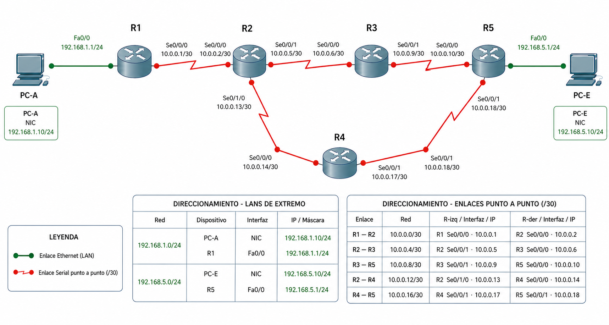

Actividad A1: Estático vs. dinámico — el puente conceptual¶
- Unidad: UT6 — Enrutamiento dinámico
- Agrupamiento: parejas
- RA y CE: repaso de RA4 (administración básica de routers). Criterios:
- 4.4 Usa comandos para configuración y administración
- 4.6 Configura rutas estáticas
- 4.7 Emplea comandos de diagnóstico.
- Recursos:
- Ficheros de trabajo:
a1_estatico_dinamico.pkt(lo construyes tú en Packet Tracer) - Documentos que tienes que tener abiertos:
plantilla_apuntes_ut6_a1.docx— tus apuntes de A1; rellenas §1.1, §1.2, §2.1 y la tabla de observaciones del estáticoplantilla_diario_ut6_a1.docx— tu diario de aprendizaje de A1plantilla_diario_ut6_a0.docx— tu diario de A0, para consultar tus Principios de uso de IA antes de formular prompts
- Material que entregas:
a1_estatico_dinamico.pktcon la topología construida y reconfiguradaplantilla_apuntes_ut6_a1.docxcon §1.1, §1.2, §2.1 y la tabla rellenosplantilla_diario_ut6_a1.docxcon la entrada A1 rellena
Cómo trabajar en parejas¶
Este lab se realiza en parejas conductor/navegante. Lean las instrucciones antes de empezar.
Roles¶
| Rol | Qué hace |
|---|---|
| Conductor | Escribe la configuración y ejecuta los pasos en Packet Tracer. Solo el conductor toca el teclado. |
| Navegante | Lee el enunciado en voz alta, propone cambios, detecta errores y formula las preguntas al conductor. |
Rotación¶
- Cambien de rol al final de cada fase.
- Al rotar, el navegante ocupa el teclado y el conductor se convierte en navegante.
- Ambos deben poder explicar cualquier parte del trabajo al terminar el lab.
Entrega¶
Suban a CAMPUS los tres ficheros en la misma tarea: a1_estatico_dinamico.pkt, el documento de apuntes con §1.1, §1.2 y §2.1 rellenos, y el diario de aprendizaje con la entrada A1 rellena.
Checkpoint de repaso¶
Antes de abrir Packet Tracer, repasen en pareja los conceptos que van a necesitar. Si algo no les sale solo, usen la IA como tutor de repaso — pero aplicando los principios de A0.
Hoy es la primera vez que recurren al manual de técnicas de IA. Antes de pasar a la Fase 2, lean con calma dos cosas del manual: la sección «La actitud que sostiene todo lo demás» —que no son técnicas, sino la disposición mental con la que se abre el chat— y la técnica #1 — pedir explicación, no solución.
La técnica #1 es el gesto concreto que se basa principalmente en el Principio 1 de A0 (pide entender, no resolver). Eso no quiere decir que no haya que aplicar los otros tres principios: el prompt sigue necesitando contexto propio (P2), pedir proceso (P3) y ser verificable (P4). La técnica les da el cómo empezar a formularlo; los principios marcan qué tiene que cumplir.
Cuando apliquen la técnica en la Fase 2 la verán marcada en cada uno de los cuatro prompts guiados.
Conceptos que van a necesitar en este lab
ip route — sintaxis de la ruta estática
Añade una ruta manualmente al router. Formato básico: ip route <red-destino> <máscara> <siguiente-salto>. Ejemplo: ip route 10.1.2.0 255.255.255.0 192.168.1.1.
show ip route — lectura de la tabla de rutas
Muestra qué rutas conoce el router y cómo las aprendió. La salida incluye una cabecera con la leyenda de todos los códigos posibles — en este lab vas a descubrir qué significan los más importantes observándolos directamente.
tracert / traceroute — seguimiento de saltos
Desde un PC: tracert <IP-destino>. Desde un router Cisco: traceroute <IP-destino>. Muestra cada salto que da el paquete hasta el destino.
Interfaz shutdown / no shutdown
shutdown apaga una interfaz. no shutdown la levanta. Al apagar una interfaz, las rutas que la atravesaban dejan de funcionar — el router no las elimina solo; tienes que hacerlo tú a mano si son estáticas.
¿No te salen los conceptos solos?
Abre la IA y pregúntale. Ejemplo de prompt útil:
"Tengo una red con 5 routers Cisco en Packet Tracer configurados con rutas estáticas. Necesito repasar cómo se lee la tabla de rutas con
show ip routey qué significa cada código (C, S, R...). Explícame los códigos más comunes con un ejemplo de salida real de ese comando."
Ese prompt funciona porque da contexto (Packet Tracer, 5 routers, rutas estáticas) y pide explicación con ejemplo, no solo la lista de códigos.
Topología de partida¶
Construye en Packet Tracer la siguiente topología usando routers modelo Router-PT. Guarda el fichero como a1_estatico_dinamico.pkt.

Dispositivos:
| Dispositivo | Modelo |
|---|---|
| R1, R2, R3, R4, R5 | Router-PT |
| PC-A, PC-E | PC |
Enlace PC-A ↔ R1 y R5 ↔ PC-E — cable directo (Copper Straight-Through).
Enlaces entre routers — cable serial (Serial DCE/DTE). El extremo DCE en el router de menor número de cada par.
Direccionamiento:
| Enlace | Red | R (extremo izq.) | R (extremo der.) |
|---|---|---|---|
| PC-A ↔ R1 | 192.168.1.0/24 | R1: Fa0/0 → 192.168.1.1/24 | PC-A → 192.168.1.10/24 |
| R1 ↔ R2 | 10.0.0.0/30 | R1: Se0/0/0 → 10.0.0.1/30 | R2: Se0/0/0 → 10.0.0.2/30 |
| R2 ↔ R3 | 10.0.0.4/30 | R2: Se0/0/1 → 10.0.0.5/30 | R3: Se0/0/0 → 10.0.0.6/30 |
| R2 ↔ R4 | 10.0.0.12/30 | R2: Se0/1/0 → 10.0.0.13/30 | R4: Se0/0/0 → 10.0.0.14/30 |
| R3 ↔ R5 | 10.0.0.8/30 | R3: Se0/0/1 → 10.0.0.9/30 | R5: Se0/0/0 → 10.0.0.10/30 |
| R4 ↔ R5 | 10.0.0.16/30 | R4: Se0/0/1 → 10.0.0.17/30 | R5: Se0/0/1 → 10.0.0.18/30 |
| R5 ↔ PC-E | 192.168.5.0/24 | R5: Fa0/0 → 192.168.5.1/24 | PC-E → 192.168.5.10/24 |
Rutas estáticas que tienes que configurar
Configura solo las rutas del camino activo R1→R2→R3→R5. El camino alternativo R2→R4→R5 no lo configures todavía — lo añadirás en la Fase 1.
| Router | Comando |
|---|---|
| R1 | ip route 10.0.0.4 255.255.255.252 10.0.0.2 |
| R1 | ip route 10.0.0.8 255.255.255.252 10.0.0.2 |
| R1 | ip route 192.168.5.0 255.255.255.0 10.0.0.2 |
| R2 | ip route 192.168.1.0 255.255.255.0 10.0.0.1 |
| R2 | ip route 10.0.0.8 255.255.255.252 10.0.0.6 |
| R2 | ip route 192.168.5.0 255.255.255.0 10.0.0.6 |
| R3 | ip route 192.168.1.0 255.255.255.0 10.0.0.5 |
| R3 | ip route 10.0.0.0 255.255.255.252 10.0.0.5 |
| R3 | ip route 192.168.5.0 255.255.255.0 10.0.0.10 |
| R5 | ip route 192.168.1.0 255.255.255.0 10.0.0.9 |
| R5 | ip route 10.0.0.0 255.255.255.252 10.0.0.9 |
| R5 | ip route 10.0.0.4 255.255.255.252 10.0.0.9 |
Antes de seguir: verifica que la topología funciona
Haz un ping desde PC-A hacia PC-E. Tiene que responder. Si no responde, revisa el direccionamiento y las rutas antes de continuar — la Fase 1 no tiene sentido si la topología de partida no funciona.
Fase 1 — Sin IA¶
En esta fase no se usa la IA
Cierra o ignora la IA durante toda la Fase 1. Si tienes dudas, anótalas para la Fase 2. El objetivo es que te enfrentes al problema en bruto: lo que sientas de frustración o bloqueo es exactamente el punto de esta fase.
Objetivo¶
Descubrir cuánto trabajo manual implica mantener la conectividad con enrutamiento estático cuando cae un enlace.
Tarea¶
Sigue los pasos en orden. Se te pedirá que anotes algunos pasos en la plantilla del diario o en la de los apuntes.
Paso 1 — Verificar la conectividad inicial
Haz ping desde PC-A hacia PC-E y hacia la IP de cada router intermedio. Anota el resultado.
PC-A> ping 192.168.5.10
PC-A> ping 10.0.0.2
PC-A> ping 10.0.0.6
PC-A> ping 10.0.0.10
PC-A> ping 192.168.5.1
Paso 2 — Observar la tabla de rutas
Entra en R2 y ejecuta show ip route. Deberías obtener algo como esto:
R2# show ip route
Codes: C - connected, S - static, I - IGRP, R - RIP, M - mobile, B - BGP
D - EIGRP, EX - EIGRP external, O - OSPF, IA - OSPF inter area
N1 - OSPF NSSA external type 1, N2 - OSPF NSSA external type 2
E1 - OSPF external type 1, E2 - OSPF external type 2, E - EGP
i - IS-IS, L1 - IS-IS level-1, L2 - IS-IS level-2, ia - IS-IS inter area
* - candidate default, U - per-user static route, o - ODR
P - periodic downloaded static route
Gateway of last resort is not set
10.0.0.0/30 is subnetted, 4 subnets
C 10.0.0.0/30 is directly connected, Serial0/0/0
C 10.0.0.4/30 is directly connected, Serial0/0/1
S 10.0.0.8/30 [1/0] via 10.0.0.6
C 10.0.0.12/30 is directly connected, Serial0/1/0
S 192.168.1.0/24 [1/0] via 10.0.0.1
S 192.168.5.0/24 [1/0] via 10.0.0.6
Sin consultar nada, haz dos cosas:
-
Lee la cabecera
Codes:que aparece al inicio de la salida. A partir de ahí, intenta deducir qué significan las letrasCySque ves al principio de cada línea de ruta. Anota tu deducción en el diario. -
Localiza los números entre corchetes en las líneas
S. Anota qué valores ves — no hace falta que sepas qué significan todavía, solo regístralos.
Anota ambas cosas en tu diario, entrada A1, apartado "Antes de empezar (fase sin IA)":
"Creo que
Csignifica ____ ySsignifica ____ porque la cabecera dice ____. Los valores entre corchetes que veo son ____ — no sé qué significan todavía."
Paso 3 — Apagar el enlace R2-R3
Este es el único enlace de la topología que tiene un camino alternativo disponible (R2→R4→R5). Si cortaras cualquier otro enlace no habría forma de recuperar la conectividad sin volver a levantarlo — y eso también es un dato importante sobre las limitaciones del estático, pero no es el experimento de hoy.
Fíjate en la topología: cuando R2-R3 cae, el único camino alternativo disponible es R2→R4→R5. Con ese dato, antes de apagar el enlace escribe en el diario, entrada A1, apartado "Antes de empezar (fase sin IA)", campo "Lo que predije":
"Voy a apagar el enlace R2-R3. Creo que los routers que van a perder conectividad son ____ porque ____. Para recuperar la conectividad usando el camino alternativo R2→R4→R5 tendré que añadir rutas en los routers ____."
Luego entra en R2 o R3 y apaga la interfaz correspondiente:
Router# configure terminal
Router(config)# interface <tipo-interfaz> <número>
Router(config-if)# shutdown
Router(config-if)# end
Lanza otro ping desde PC-A hacia PC-E. Confirma que ya no llega.
Paso 4 — Comprobar qué ha cambiado en la tabla de rutas
Con el enlace R2-R3 caído, vuelve a ejecutar show ip route en R2. Compara la salida con la que anotaste en el Paso 2.
- ¿Qué líneas han desaparecido?
- ¿Las rutas estáticas que apuntaban por ese enlace siguen apareciendo aunque el enlace esté caído?
Anota la diferencia en el diario (entrada A1, apartado "Antes de empezar", en "Dificultades que encontré"). Este comportamiento —que el estático no se elimina solo— es una de las características clave del lab.
Paso 5 — Restaurar la conectividad solo con rutas estáticas
Tienes que recuperar la conectividad entre PC-A y PC-E modificando solo rutas estáticas (no levantes el enlace que acabas de apagar).
A medida que vayas añadiendo comandos, anótalos en tu diario (entrada A1, apartado "Antes de empezar (fase sin IA)", tabla "Comandos que añadí para restaurar la conectividad"). Incluye el router donde lo ejecutas en cada fila.
Cuando creas que lo has arreglado, verifica en dos pasos:
pingdesde PC-A hacia PC-E — confirma que hay conectividad.tracertdesde PC-A hacia PC-E — confirma que el camino pasa por R4 y no por R3. Deberías ver las IPs de R2, R4 y R5 en los saltos intermedios.
¿Qué es tracert?
tracert (en Windows/Packet Tracer) o traceroute (en routers Cisco) muestra cada router por el que pasa un paquete hasta llegar al destino. A diferencia de ping, que solo dice si llegó o no, tracert muestra el camino completo salto a salto. Útil para confirmar que el tráfico va por donde tú quieres.
Sintaxis desde un PC en Packet Tracer: tracert <IP-destino>.
Si el tracert muestra saltos por R3, revisa las rutas que has añadido.
Paso 6 — Extrapolar a 50 routers
Con lo que acabas de hacer en los 5 routers, responde por escrito en el diario:
"En esta red de 5 routers, al caer un enlace he tenido que añadir ____ comandos
ip routeen ____ routers. En una red de 50 routers, ese trabajo lo tendría que hacer un administrador a mano, router por router. El principal problema que veo con eso es: ____."
Anota en el diario — entrada A1, apartado «Antes de empezar (fase sin IA)»
Antes de pasar a la Fase 2, rellena estos campos en tu diario:
- Los valores entre corchetes que viste en
show ip routey que no entiendes todavía (Paso 2). - La tabla de comandos: un comando por fila con el router donde lo ejecutaste.
- El resumen: total de comandos, tiempo real, principal problema que ves si fueran 50 routers.
- Dificultades que encontré: uno por línea, lo más concreto posible.
Fase 2 — IA como tutor socrático¶
Ahora sí puedes usar la IA. Usa los prompts en orden y anota las respuestas en el diario.
Los cuatro prompts guiados aplican la técnica #1 del manual de técnicas: piden explicación, no la solución directa. Al construir el Prompt 5 te toca a ti decidir si aplicas #1 u otra forma de prompt.
Objetivo¶
Entender los conceptos que explican lo que acabas de vivir, incluyendo algo que has observado en la tabla de rutas y que todavía no sabes qué es.
Prompts que vas a hacer¶
No modifiques los prompts para obtener la solución directa
Si la IA te da la solución sin que la hayas pedido, ignora esa parte y quédate solo con la explicación conceptual.
Prompt 1 — Los códigos de show ip route (técnica #1 del manual)
Vuelve a tu deducción del Paso 2. Has intentado interpretar C y S a partir de la cabecera — ahora contrástala con la IA:
"En Packet Tracer, al ejecutar
show ip routeen R2, veo líneas que empiezan porCy otras porS. La cabecera del comando me dice queCes connected ySes static. Creo queCsignifica que esa red está directamente conectada a una interfaz del router, ySque la configuré yo a mano conip route. ¿Es correcta mi interpretación? ¿Qué diferencia práctica hay entre las dos cuando el router decide cómo reenviar un paquete?"
¿Tu deducción era correcta? Anota en el diario qué acertaste y qué matizó la IA.
Prompt 2 — Los números misteriosos de show ip route (técnica #1 del manual)
Vuelve a los valores entre corchetes que anotaste en el Paso 2. Pregúntale a la IA:
"En Packet Tracer, al ejecutar
show ip routeen un router con rutas estáticas, veo líneas como esta:S 192.168.5.0/24 [1/0] via 10.0.0.2. ¿Qué significan los números entre corchetes? ¿Para qué sirven cuando hay varias rutas hacia el mismo destino?"
Contrasta la respuesta con lo que ves en tu tabla de rutas real. ¿Coincide?
Prompt 3 — Por qué falla el estático cuando la red crece (técnica #1 del manual)
"Acabo de hacer un lab en Packet Tracer con 5 routers en malla parcial configurados con rutas estáticas. He cortado un enlace y he tenido que añadir [X] comandos
ip routeen total, en [N] routers distintos para recuperar la conectividad. ¿Qué problema resuelve un protocolo de enrutamiento dinámico que el estático no puede resolver en este escenario?"
(Sustituye [X] y [N] por los valores reales de tu lab.)
Prompt 4 — Cuándo el estático sigue siendo mejor (técnica #1 del manual)
"En ese mismo lab, ¿en qué casos seguiría siendo mejor el enrutamiento estático aunque la red tenga muchos routers? Dame al menos dos casos concretos donde preferirías estático sobre dinámico."
Verifica lo que te diga la IA
Si la IA menciona valores numéricos concretos (como los que viste entre corchetes), contrástalos con lo que observaste tú en la tabla de rutas. Los LLMs a veces confunden versiones de IOS o mezclan protocolos. Anota en el diario cualquier cosa que te haya parecido dudosa.
Prompt 5 — El tuyo
Ya has hecho cuatro prompts guiados. Ahora formula uno propio sobre cualquier aspecto de este lab que todavía no tengas claro o que te haya llamado la atención.
No hay plantilla. Antes de escribirlo, repasa los cuatro principios de A0:
- ¿Estás pidiendo entender, no que te resuelvan algo?
- ¿Has incluido contexto de tu lab (topología, número de routers, comandos que ejecutaste)?
- ¿Pides proceso o explicación, no el resultado final?
- ¿Puedes verificar lo que te diga?
Anota el prompt en el diario (entrada A1, Prompt 5) junto con la respuesta y qué verificaste.
Prompts buenos vs. malos para este lab¶
| Malo | Por qué falla | Bueno |
|---|---|---|
"¿qué son los números entre corchetes en show ip route?" |
Sin contexto, respuesta genérica. | "Veo [1/0] en las rutas estáticas de mi tabla. ¿Qué significa cada número y qué pasa si hay dos rutas al mismo destino con valores distintos?" |
"¿qué es el enrutamiento dinámico?" |
Genérico, respuesta de Wikipedia. | "Tengo 5 routers con rutas estáticas y al caer un enlace tuve que cambiar config en 3 routers a mano. ¿Qué resuelve el dinámico exactamente en este caso?" |
"explícame las ventajas del enrutamiento dinámico" |
Pide producto, no proceso. | "Con estático necesité X comandos para reconverger. ¿Cómo resolvería eso un protocolo dinámico, paso a paso?" |
Anota en el diario — Fase 2
Rellena en tu diario (entrada A1, apartado "Prompts que usé"):
- Los cuatro prompts guiados con tus valores reales sustituidos.
- El Prompt 5 que construiste tú, sin plantilla. Indica qué técnica del manual aplicaste o, si no aplicaste ninguna, qué principio de A0 te guio.
- Qué te devolvió la IA en cada uno (una línea por prompt).
- Qué parte de cada respuesta verificaste y cómo.
Fase 3 — Ejecución supervisada¶
Objetivo¶
Sistematizar en una tabla lo que acabas de descubrir. No hay configuración nueva — el trabajo de esta fase es de documentación.
Tarea¶
Con lo que viviste en la Fase 1 y lo que entendiste en la Fase 2, completa esta tabla. Rellena cada celda con tus propias palabras, no copiando de la IA.
| Criterio | Lo que observé con enrutamiento estático |
|---|---|
| Escalabilidad — qué pasa cuando la red crece y hay más routers | |
| Convergencia — cuánto tarda la red en recuperarse cuando cae un enlace |
Pista para rellenar la tabla
Para cada criterio, piensa en lo que acabas de hacer en la Fase 1: ¿cómo lo has vivido con el estático? Para el dinámico, apóyate en lo que te explicó la IA en los Prompts 3 y 4.
Anota en los apuntes — tras la Fase 3
Rellena estas secciones en tu documento de apuntes (plantilla_apuntes_ut6_a1.docx):
§1.1 — Limitaciones del estático en redes grandes (máx. 100 palabras) Redacta con tus palabras qué problemas presenta el estático cuando la red crece. Usa datos concretos de tu lab: cuántos routers, cuántos comandos, tu estimación para 50 routers.
Plantilla de párrafo (solo en A1)
Para arrancar: "El enrutamiento estático presenta la limitación de ____ porque ____. Esto se hace evidente cuando ____." A partir de A2 no habrá plantilla.
§1.2 — Cuándo el estático sigue ganando (máx. 100 palabras) Redacta cuándo elegirías estático y por qué. Apóyate en los casos que te dio la IA en el Prompt 3, pero filtra: ¿estás de acuerdo con los que te da? ¿Añadirías alguno basándote en tu lab?
§2.1 versión inicial — Distancia administrativa (máx. 100 palabras)
Explica con tus palabras qué son los números entre corchetes que viste en show ip route y para qué sirven cuando dos rutas compiten hacia el mismo destino. Apóyate en lo que descubriste con el Prompt 2 de la Fase 2.
Tabla de observaciones del estático Copia la tabla que acabas de completar en esta fase. La completarás con la columna del dinámico en A2 y A3.
Entrada A1 del diario de aprendizaje¶
Esta sección resume lo que tienes que tener relleno en el diario al terminar la actividad.
Fase sin IA¶
- Observación de los valores entre corchetes en
show ip route(Paso 2). - Comandos añadidos, en cuántos routers, estimación para 50 routers.
- Errores o bloqueos que tuviste.
Prompts que usé y por qué los formulé así¶
Los cinco prompts literales (con tus datos reales). Para cada uno indica si aplicaste alguna técnica del manual y, si no aplicaste ninguna, qué principio de A0 te guio. Y qué verificaste de la respuesta.
Errores que detecté en respuestas de la IA¶
Si la IA te dijo algo incorrecto (un valor equivocado, un comando inexistente, una explicación al revés), anótalo:
- Qué dijo la IA.
- Qué comprobaste.
- Por qué crees que se equivocó.
Si no detectaste ningún error, escribe: "No detecté errores en las respuestas, pero debo reconocer que no las verifiqué a fondo en: ____."
Validación cruzada¶
Al terminar, intercambia los apuntes (§1.1, §1.2, §2.1) con otra pareja antes de la entrega final.
La pareja que recibe los apuntes comprueba:
- ¿El §1.1 menciona datos concretos del lab (número de comandos, estimación para 50 routers)?
- ¿El §1.2 incluye al menos dos casos reales donde el estático sería preferible?
- ¿El §2.1 explica con sus palabras qué son los números entre corchetes y para qué sirven?
Si alguna sección falla alguno de estos criterios, devuélvela con una nota. No corrijas tú: señala el hueco y deja que la pareja lo corrija.
La validación cruzada no es opcional en A1
En A1 y A3 esta revisión entre parejas forma parte del proceso de aprendizaje. Si no la haces, tus apuntes llegan a la corrección docente sin un filtro previo.
Reflexión final¶
Al terminar A1 deberías poder decir...
- Sé por qué el enrutamiento estático no escala: lo he vivido con mis propias manos en 5 routers y he calculado lo que costaría en 50.
- Entiendo qué problema viene a resolver el enrutamiento dinámico antes de haber configurado ningún protocolo dinámico.
- Sé cuándo el estático sigue siendo la mejor opción, con ejemplos concretos.
- Sé qué significan los números entre corchetes en
show ip routey para qué sirven cuando conviven varias fuentes de rutas. - He rellenado §1.1, §1.2 y §2.1 de mis apuntes con mis propias palabras y los datos de mi lab.
- He registrado en el diario los prompts que hice, cómo los formulé y qué verifiqué.
Checklist de entrega¶
- He verificado la conectividad inicial y la he documentado.
- He anotado los valores entre corchetes de
show ip routeen el diario antes de saber qué eran. - He apagado el enlace crítico y he recuperado la conectividad solo con rutas estáticas, anotando cada comando y en qué router.
- He hecho la estimación para 50 routers.
- He completado los cuatro prompts guiados de la Fase 2 con los datos reales de mi lab y he formulado el Prompt 5 propio. Todo anotado en el diario.
- He rellenado §1.1, §1.2, §2.1 y la tabla estático vs. dinámico en el documento de apuntes.
- He rellenado la entrada A1 del diario: Fase sin IA + prompts + errores detectados.
- He validado los apuntes de otra pareja y he recibido validación de los míos.
- Subo a CAMPUS:
a1_estatico_dinamico.pkt+plantilla_apuntes_ut6_a1.docx+plantilla_diario_ut6_a1.docx.